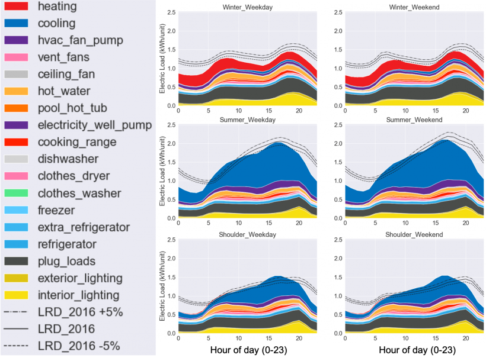
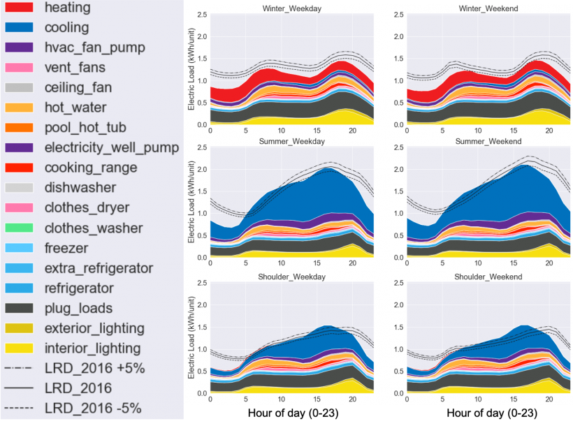

Performed exploratory data analysis using python libraries such as Numpy, Pandas, Seaborn and matplotlib to provide insights for Company XYZ, a supermarket chain across the country. Each major branch located in 3 cities across the country recorded sales information for 3 months and I cleaned, visualized and analyzed the data and was able to provide insights to help the company understand sales trends and determine its growth, as the rise of supermarkets competition is seen to increase.
 

Regression, a statistical method used in finance, investing, and other disciplines, attempts to determine the strength and character of the relationship between one dependent variable and a series of other variables (known as independent variables).
In this project, I develop a multivariate multiple regression model to study the effect of eight input variables on two output variables, which are the heating load and the cooling load, of residential buildings. I used python libraries including numpy, pandas, matplotlib, seaborn, sklearn and statsmodels. I cleaned up the data, visualized and explored it and trained the data a few times before building the final linear regression model.
The dataset used in this course was obtained from the National Footprint and Biocapacity Accounts. It provides Ecological Footprint per capita data for years 1961-2016 in global hectares (gha). In this project, I used the data to classify and predict the quality metrics (qscore) of the ecological footprint data for the different countries. I used python libraries including numpy, pandas, matplotlib, seaborn, sklearn and statsmodels. I cleaned up the data, visualized, explored, analysed, and trained the data before building the final logistic regression models using RandomForest, ExtraTrees Classification and so on.
In this project, I used SQL Server to explore global COVID 19 data to determine the likelihood of contacting Covid-19 in my country, the percentage of population infected and various other insights. Skills used: Joins, CTE's, Temp Tables, Windows Functions, Aggregate Functions, Creating Views, Converting Data Types

This holds the dashboards done to visualize key insights from various datasets using Power BI and Microsoft Excel